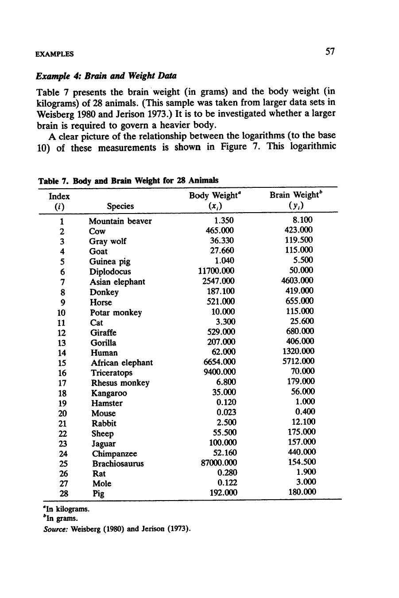
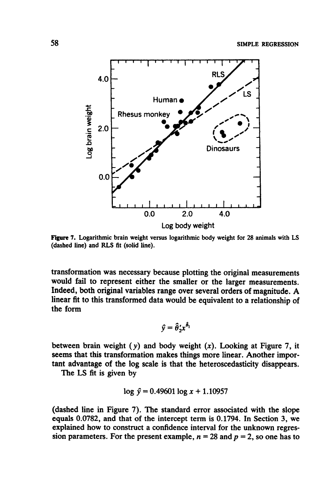

2 Typst
Typst is a modern markup-based typesetting system designed as an alternative to LaTeX. It combines the power of LaTeX with a much simpler syntax and faster compilation times. Unlike traditional word processors, Typst provides precise control over document layout while being significantly more approachable than LaTeX.
Typst excels at academic writing, technical documentation, and thesis preparation. It offers built-in support for mathematical notation, bibliographies, cross-references, and professional layouts. The language is designed with modern programming principles, making it both powerful and intuitive.
Some key advantages of Typst over LaTeX include faster compilation, cleaner syntax, better error messages, and a more modern approach to document structure. Unlike word processors, Typst ensures consistent formatting and professional typographic quality.
To use Typst for your Thesis, we recommend the following steps:
2.1 System Setup
Either:
- Use the Typst web app for a quick start without installation or
- Download and install Typst and then set up Typst to work with your preferred IDE with tinymist
2.2 Initiate preview
Start with an empty text file with the .typ file extension. In the examples we will use main.typ.
If you are using typst locall, run the following command in the terminal:
typst watch main.typThis will:
- Create a PDF file in the working directory
- Start a watch process that will automatically re-create index.pdf when changes to
main.typare saved - Open the rendered PDF file in your default PDF viewer
This is a very good starting point to learn Typst.
2.3 Add text
Now, open main.typ in your preferred IDE and add some content. To make things interesting, we recreate the chapter of Rousseeuw and Leroy (1987) shown in Figure 2.1 and 2.2.


In Typst, this text is similar to Markdown but with some differences:
- Headings are created with
=symbols (one for level 1, two for level 2, etc.) - Paragraphs are separated by blank lines
- Emphasis is created with underscore
_for italic and asterisk*for bold
You can find more information about Typst syntax here.
= Example 4: Brain and Weight Data
Table 7 presents the brain weight (in grams) and the body weight (in
kilograms) of 28 animals. (This sample was taken from larger data sets in
Weisberg 1980 and Jerison 1973.) It is to be investigated whether a larger
brain is required to govern a heavier body.
A clear picture of the relationship between the logarithms (to the base
10) of these measurements is shown in Figure 7. This logarithmic
transformation was necessary because plotting the original measurements
would fail to represent either the smaller or the larger measurements.
Indeed, both original variables range over several orders of magnitude. A
linear fit to this transformed data would be equivalent to a relationship of
the form
_placeholder for formula_Save the file and see the changes reflected in the PDF viewer.
2.4 Add metadata
Typst documents can contain metadata and configuration at the top of the file using function calls. This metadata can add content to the document (such as a title, author name, date, etc), but also specify how the document should be rendered.
Add the following metadata to the top of your main.typ file:
#set document(title: "Robust Regression and Outlier Detection", author: "Peter J. Rousseeuw, Annick M. Leroy")
#set page(paper: "a4")
#set text(font: "New Computer Modern", size: 11pt)
#align(center)[
#text(size: 18pt, weight: "bold")[Robust Regression and Outlier Detection]
#text(size: 14pt)[Chapter 2: Simple Regression]
#v(1em)
Peter J. Rousseeuw and Annick M. Leroy
October 19, 1987
]
#v(2em)Typst compiles directly to PDF, which is ideal for thesis submission. Unlike other tools, you don’t need separate rendering steps.
2.5 Add Equations
Equations in Typst use a syntax similar to LaTeX but simpler. Inline equations are surrounded by single dollar signs, and display equations are written in blocks with the $ delimiter.
More information on equations can be found here.
To write equations, you can use an online LaTeX equation editor and adapt the syntax for Typst. You will need to experiment and refer to the Typst documentation for specific syntax differences.
In our example, you can add the following equation to the document:
$ hat(y) = hat(theta)_2^prime x^(hat(theta)_1) $2.6 Add Code
Typst supports scripting capabilities for dynamic content generation, though it’s more limited compared to computational notebooks. For basic scripting and calculations, you can use Typst’s built-in functions:
#let data = csv("Animals.csv")
#let animal_count = data.len()
This dataset contains #animal_count animals.For more complex data processing, export your results to CSV or image files from Python/R and import them into Typst.
2.7 Add Tables
Creating tables in Typst is straightforward with the table function. You can import CSV data directly or create tables manually.
First, ensure you have the Animals.csv file in the same directory as your main.typ file. Then, create a table:
#figure(
table(
columns: 3,
[Animal], [Brain Weight (g)], [Body Weight (kg)],
..csv("Animals.csv").flatten()
),
caption: [Brain and body weights of 28 animals.]
) <tbl-animals>2.7.1 Add table references
To reference the table in the text, replace:
Table 7 presents the brain weight (in grams) and the body weight (in
kilograms) of 28 animals.With:
@tbl-animals presents the brain weight (in grams) and the body weight (in
kilograms) of 28 animals.2.8 Add Figures as files
The general syntax for adding figures is:
#figure(
image("figure.png"),
caption: [Your caption here]
)Download brain-vs-body.png and save it in the same folder as your main.typ file. Then, add the following:
{kind=link}
#figure(
image("brain-vs-body.png", width: 70%),
caption: [Logarithmic brain weight versus logarithmic body weight for 28 animals with LS (dashed line) and RLS fit (solid line).]
) <fig-brain-body>To reference the figure in text, replace:
A clear picture of the relationship between the logarithms (to the base
10) of these measurements is shown in Figure 7.With:
A clear picture of the relationship between the logarithms (to the base
10) of these measurements is shown in @fig-brain-body.You can control the image size using the width and height parameters, specified as percentages or absolute values.
2.9 Add Bibliography and Citations
Typst has excellent built-in support for bibliographies. Create a bibliography file in BibTeX format (.bib file) or use Typst’s YAML format (.yml file).
Create a file named references.bib with the following content:
@article{weisberg1980,
title={Some large-sample tests for nonnormality in the linear regression model: Comment},
author={Weisberg, Sanford},
journal={Journal of the American Statistical Association},
volume={75},
number={369},
pages={28--31},
year={1980},
publisher={JSTOR}
}
@book{jerison1973,
title={Evolution of the brain and intelligence},
author={Jerison, Harry J},
year={1973},
publisher={Academic Press}
}Then, add the bibliography to your Typst document by including this at the location, where you want your bibligraphy to appear:
#bibliography("references.bib")Now you can cite sources in your text:
(This sample was taken from larger data sets in @weisberg1980 and @jerison1973)